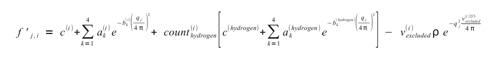

| |
Manual |
In this module you can set/change the parameters used by the SAXS/SANS Simulation Module. The module has been split up into several sub-modules, as shown in the above image. The sub-menus can be accessed by clicking on their names.

In the SAXS Computation Options: section, the first entry that can be set/changed is the Water electron density (e / A^3): (default: 0.334 e/A3).
Next comes an extended range of computational options in respect to those available in the main US-SOMO SAXS/SANS panel:

with

where c(i), ak(i) and bk(i) are the X-ray scattering atomic coefficients of non-hydrogen atom i, taken from the SAXS coefficients table, count(i)hydrogen is the number of hydrogens attached to atom i, deduced from the atom definition table, c(hydrogen), ak(hydrogen) and bk(hydrogen) are the X-ray scattering atomic coefficients of hydrogen atoms, v(i)excluded is the excluded volume of the atomic group i (non-hydrogen atom + attached hydrogen(s)), taken from the atom definition table, ρ is the solvent electron density, qj is the scattering vector at which the computation is performed, and ri,k is the distance between the centers of atoms i and k.
Next come a series of entries where various parameters can be set:
In the Fast Debye: Bin size. Smaller bin sizes increase accuracy at the cost of increased computational time. See the FoXS paper reference for details. The default value is that used in the standard FoXS method.
In the Fast Debye: Modulation. The modulation effects the exponential decay of a point scatterer extended from the intensity at q = 0 (I(0)). See the FoXS paper reference for details. The default value is that used in the standard FoXS method.
In the Hybrid, H2, H3: q points This parameter effects the accuracy of the hybrid computation. A larger value will give a more accurate curve at the cost of speed.
The next three entries set some Crysol options:
Crysol: Maximun order of harmonics (default: 15). Increase this number as the size of the structure grows (max for the current Crysol implementation: 40).
Crysol: Order of the Fibonacci grid (default: 17). Increase this number as the size of the structure grows (max for the current Crysol implementation: ??)
Crysol: Contrast of the hydration shell (e/A^3): (default: 0.03 e/A3). Set this parameter to "0" if you want to run Crysol on a structure with explicit hydration waters.
Two checkboxes follow, still Crysol-related:
Crysol: automatically load difference intensity (default: on). After a Crysol computation, the difference intensity data will be loaded in the graphic window.
Crysol: support version 2.6 (default: on).

In the SANS Options: section, several parameters can be controlled:
b(Y)i = b(0)i + n(HExch)i * Y * [b(D) - b(H)] * [ 1- f(NHExch)i]
where b(0)i are the neutron scattering lengths of the non-H atoms at Y = 0 and n(HExch)i are the number of exchangeable H attached to them (both tabulated in the hybridization table), b(D) and b(H) are the D and H scattering lengths, respectively, and f(NHNExch)i is the fraction of non-exchanged peptide bond H (which is 0 for all atoms except for the peptide bond N atom), all as defined in this panel (see above).
As for the SAXS Computation options panel, we have listed a series of alternative methods for the computation of the SANS I(q) vs. q curves. However, none it is active at this time (March 2012).

The SAS Curve Generation Options: section contains fields whose values are used in the simulation of either a
SAXS or a SANS curve.
Enter either the X-ray or neutron wavelength in the Wavelength (Angstrom): field (default: 1.5 A for
SAXS; for SANS, an usual value is 6 A).
The span and point density of the simulated curve can be controlled by entering appropriate values in the
Starting Angle, Ending Angle, and Angle Stepsize fields, or in the
corresponding Starting q, Ending q, and q Stepsize fields, where the
transformation from angle units to scattering vector q units is automatically carried over by the program.
Default values are 0.001 to 0.6 A-1 q range with a 0.015 stepsize, corresponding to an
angular range of 0.014 to 8.214 degrees with a 0.2 degrees stepsize for a wavelength of 1.5 A.
The Normalize P(r) vs r curve by molecular weight is selected by default. Deselecting it will cause the P(r) vs. r curves to be normalized only by their areas.
The options in this panel are currently not yet (April 2012) active.

In the SAS Guinier Options menu, the options controlling the Guinier analysis of SAS data can be set:
The results can be saved in a csv file by selecting the Save Guinier results to csv file: checkbox, and entering a filename in the related field.
Other controls are:
The Maximum number of points: to be included in the analysis (default: 100).
In the SAS Miscellaneous Options menu, several controls and limits can be set.
In order to properly compute the I(q) vs. q and P(r) vs. r curves, the SAS module utilizes the atom definition (default: somo.atom), hybridization (default: somo.hybrid) and SAXS coefficients (default: somo.saxs_atoms) tables.
Different tables can be selected by pressing the Load Atom Definition File, Load Hybridization File, and Load SAXS Coefficients File buttons. See the main help for further explanations on the content and use of these tables.
Next come a series of checkboxes:
The Excluded volume scaling field allows to modify by a % value the excluded volumes of the non-water atomic groups as tabulated in the atom definition table.
Pressing the Clear remembered molecular weights button will erase stored MW from the program's memory.
Finally, a different q range can be entered in the I(q) curve q range for scaling, NNLS and best fit (Angstrom) two fields.
This document is part of the UltraScan Software Documentation
distribution.
Copyright © notice.
The latest version of this document can always be found at:
http://www.ultrascan.uthscsa.edu
Last modified on April 16, 2012.
{kind=link}
{kind=link}
{kind=link}